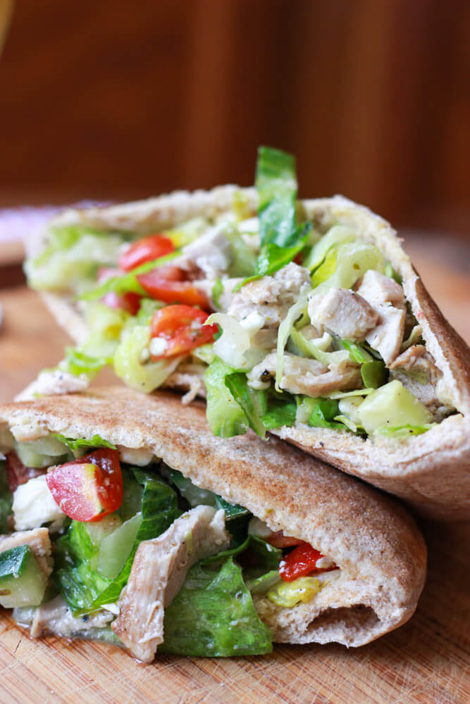

Lemon chicken pittas

Description
Here's the annoying part of a recipe website: you've found what you actually
want but instead of giving you the recipe, you have to scroll through endless
mountains of stupid bloody text whilst the author bangs on about their kids or their
jobs and just how hectic their schedules are and when they're really at a push and
pressed for time, the recipe that you wactually wanted to read in the first place is
the answer to all of life's problems.
Or we maybe have to listen to a story about their childhoods, and this is dear ol'
granny's favourite recipes and just the whiff of it whilst it's cooking takes them
right back to being a kid and blah blah blah just give me the friggin' recipe already,
amirite?
Ingredients
- 1 Lemon (plus grated zest)
- 2 cloves of garlic
- 2 tbsp olive oil
- mixed herbs
- salt
- pepper
- 1 chicken breast
- 3 pitta breads
- iceberg lettuce
- 1 red onion
- handful of cherry tomatoes
- 1 tbsp mayonnaise
Steps
- Finely grate the lemon and sprinkle the zest into a 500ml measuring jug.
- Halve and juice the lemon and then pour the juice on top of the zest.
- Add the olive oil to the jug.
- Peel and crush the garlic cloves and toss them into the jug.
- Season the mixture with salt and pepper don't be cheap with the salt!
- Add a decent amount of mixed herbs to the mixture and stir vigorously.
- Score the chicken breast three or four times.
- Place the breast into the jug and stir it through the mixture. Try to completely
coat the chicken in the mix. Ideally you will be able to push the chicken down
until it is completely submersed in the marinade.
- Place the jug into the fridge and leave it for at least 2 hours. The breast
should now be bleached white by the citrus.
- Pre-heat the oven at 200 degrees celsius.
- Place the chicken breast on a layer of tinfoil.
- Pour whatever is left of the mixture over the chicken and the fold the foil
over the chicken to allow it to steam cook in the oven.
- Cook for 45 minutes.
- Whilst the chicken is cooking, finely chop the salad and place into a large
mixing bowl. Throw in the mayonnaise and mix thoroughly.
- When the chicken is cooked, remove it from the oven and open the tent (be careful
when opening the tent as the steam could scald!)
- Using two forks, shred the chicken as finely as possible and toss it into the salad mix.
- Stir the chicken into the salad(optionalbut recommended: pour some of the
remains of the marinade from the foil into the mix to enhance the texture.
- Pop the pittas into the toaster.
- Once toast, carefully slice the pittas along one horizontal edge.
- Stuff the chicken salad mixture into the pittas and serve immediately.